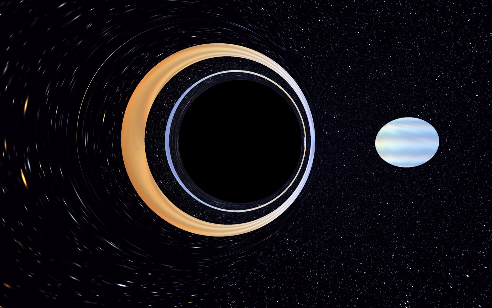
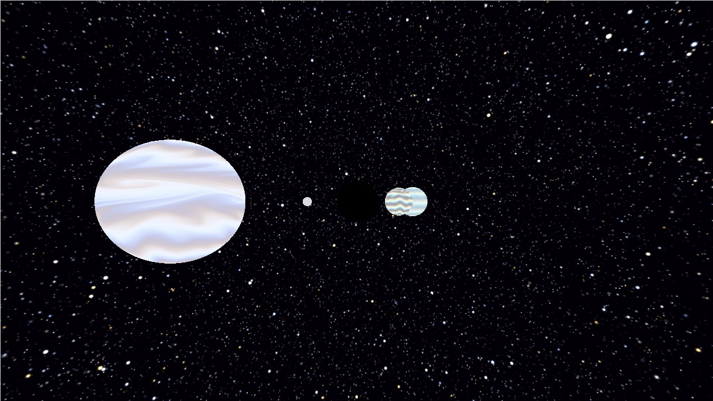
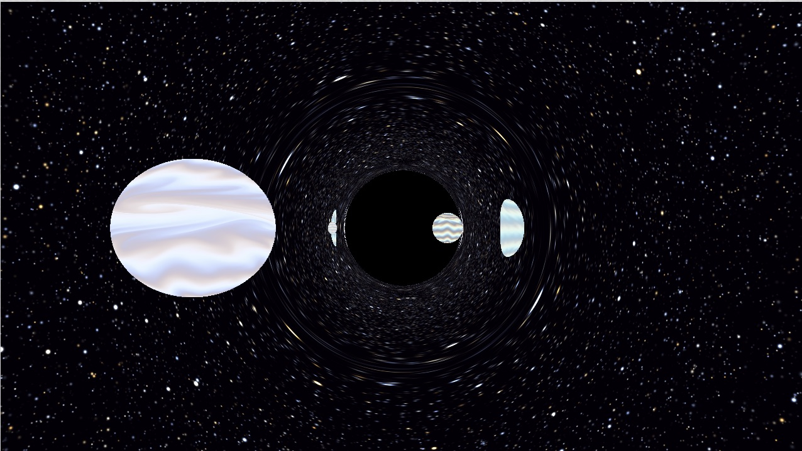
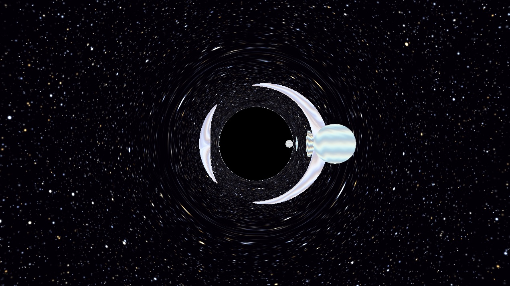
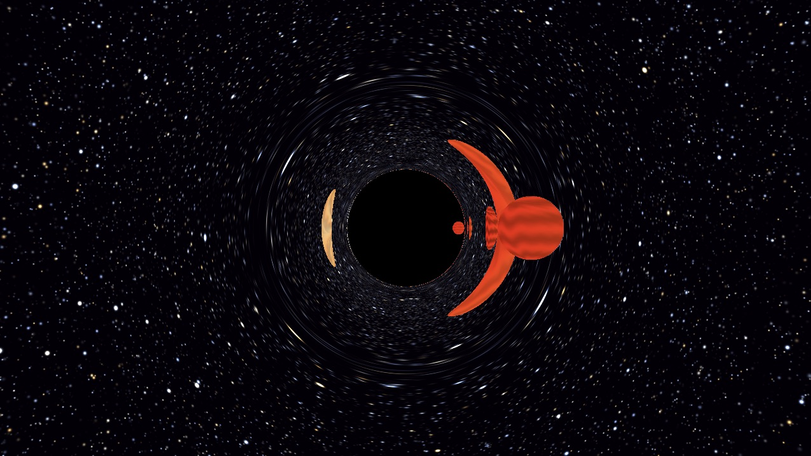
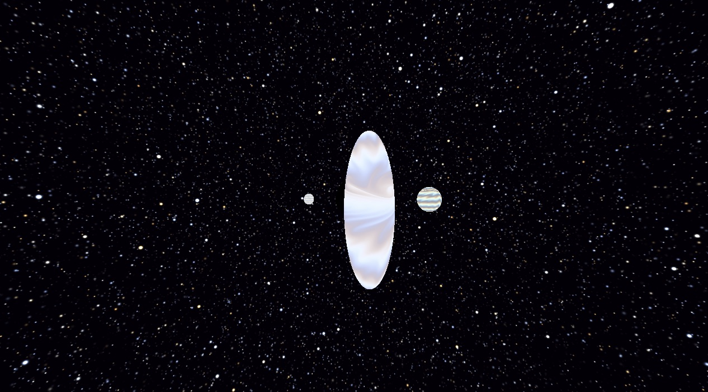
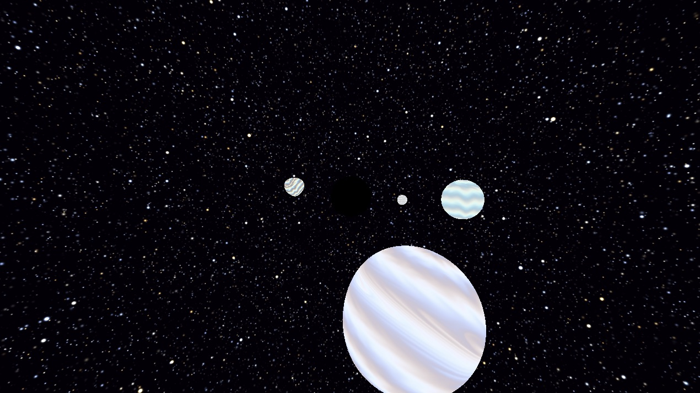
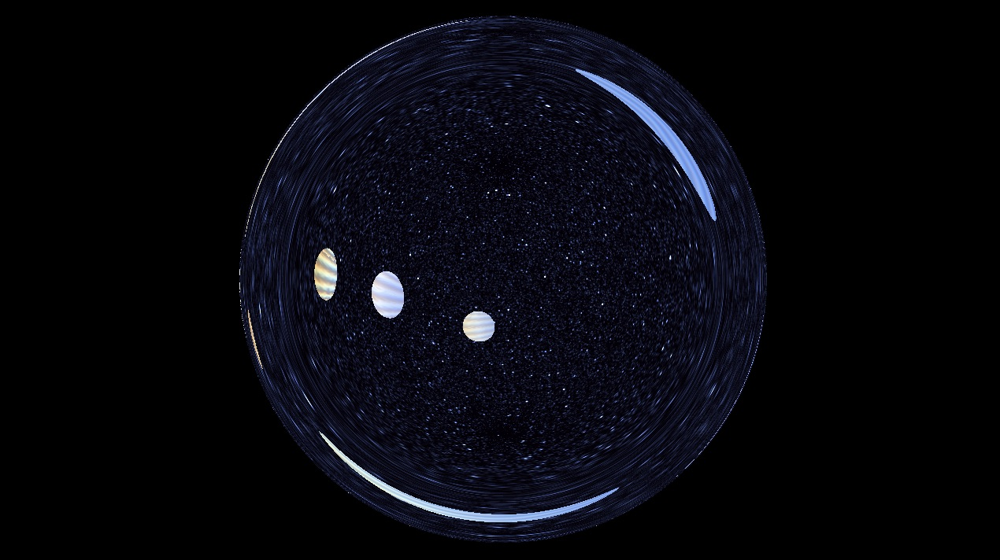
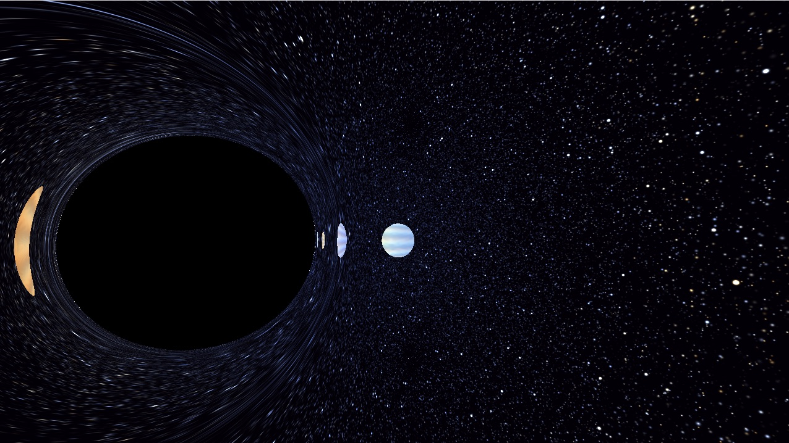

Space and Time
Mise en évidence des effets relativistes autour d’un trou noir de Schwarzschild
Pacôme LUTON, (LJK, UGA, INRIA)

1Scène et utilisation
Le shader rend en temps réel un trou noir de Schwarzschild [1], quatre planètes en orbite circulaire et un fond d’étoiles à l’infini, vus par plusieurs observateurs. Son but est de montrer et de mettre en valeur le plus grand nombre possible d’effets relativistes, de relativité restreinte comme de relativité générale. Chaque pixel lance un rayon à rebours dans l’espace-temps courbe ; le rayon porte une position et un temps. On obtient ainsi la courbure de la lumière, son temps de trajet (effet Shapiro [2] compris), les effets Doppler [3], la contraction des longueurs [4], l’aberration et le temps propre de chaque objet (transformation de Lorentz [5]). Chaque effet a un interrupteur dans l’onglet Common (tableau 2), ce qui permet de les isoler (section 4) ; les principales constantes de la scène sont réglables (tableau 3).
Organisation. Common contient la physique (repères, Doppler, orbites, temps propre) et le shading ; Image contient la marche du rayon ; Buffer A mémorise d’une image à l’autre l’orientation de la caméra (souris), l’observateur choisi et la hauteur de l’observateur statique (commandes : tableau 1).
1 à 7 choisissent l’observateur.| Touche | Observateur (point de vue) |
|---|---|
1 | lointain (WORLD, \(r = 18\)), par défaut |
2 | centre du trou noir (image noire) |
3–6 | sur la planète A à D (de la plus proche à la plus loin) |
7 | statique (STATIC), orientation réinitialisée |
| Commande | Action |
|---|---|
| ↑↓ | hauteur \(r = h\,r_s\) de STATIC, \(1 < h \le 30\) (défaut 1,2) |
| souris | WORLD : orbite autour du trou noir |
| autres : tourne la tête dans le repère propre |
| Macro | Défaut | Effet |
|---|---|---|
SPACE_IS_CURVE | 1 | courbure de l’espace-temps (\(f\)) |
LIGHT_AS_A_SPEED | 1 | temps de trajet de la lumière |
DOPPLER_CLASSIQUE | 1 | facteur \(1 + \vec\beta\cdot\hat d\) |
DOPPLER_RESTREINT | 1 | facteur \(\gamma\) |
DOPPLER_GRAVITATIONNEL | 1 | facteur \(1/\sqrt f\) |
CONTRACTION_LONGUEURS | 1 | Lorentz local \(\leftrightarrow\) propre |
TEMPS_PROPRE | 1 | horloge de l’observateur |
PULSE | 1 | pulsation au temps propre |
| Constante | Valeur | Rôle |
|---|---|---|
C | 1 | vitesse de la lumière |
RS | 1,4 | rayon de Schwarzschild |
TIME_SPEED | 10 | accélère la simulation |
ACCELERATE_PLANETE | 4 | facteur sur la vitesse des planètes |
PLANETES | rayon \(a\), orbite \(R\), phase \(\phi_0\) |
2Trois niveaux de repères
Les formules de relativité restreinte ne valent que dans un repère où la métrique est celle de Minkowski au point considéré ; le shader travaille donc sur trois niveaux, et chaque passage ne fait intervenir qu’un seul effet.
coordonnées de Schwarzschild \((t, \vec x)\)
rayon, positions, vitesses \(d\vec x/dt\), marche
mondeVersLocalbetaLocaledirectionMondeVersLocaleobservateur immobile en \(\vec x\)
relativité restreinte : \(\vec\beta\), \(\gamma\), Doppler ; un objet mobile y paraît contracté
ecartLocalVersPropredirectionPropreVersLocalenergiePhotonobjet ou observateur au repos
forme vraie (sphère), texture, spectre émis, temps propre
Monde \(\leftrightarrow\) local statique. L’observateur statique a les mêmes axes que le monde ; il mesure \(d\tau = \sqrt f\,dt\) et des longueurs radiales \(dr/\sqrt f\). Avec \(\vec k = d\vec x/d\lambda\) la vitesse du rayon (ray.dir) [6] :
Local statique \(\leftrightarrow\) propre. C’est la relativité restreinte, avec la vitesse locale \(\vec\beta\) de l’objet et \(\gamma = (1-\beta^2)^{-1/2}\). Transformations de Lorentz [5] :
Le code en déduit la contraction des planètes [4], l’aberration des directions et le facteur Doppler.
3Algorithme
- repère caméra1. Pixel (
generateRay)
direction du pixel, FOV \(75^\circ\) - rotation
baseDepuisForward - propre de l’observateur2. Orientation (
local2World)
\(\hat d'\) dans les axes monde - aberration (2),
directionPropreVersLocal - local statique en \(\vec x_o\)3. Aberration
\(\hat d\) vue par l’observateur statique - gravitation (1),
directionLocalVersMonde - monde4. Rayon monde
\(\vec x_o,\ \vec k,\ t_o = \tau_o/(d\tau/dt)_o\) -
monde5. Marche (
traceRay)
géodésique nulle et temps \(t(\lambda)\)
arrêt : horizon, fond étoilé ou planèteboucle, pas \(d\lambda\)chaque planète, à chaque pas- monde\(\Delta\vec x = \vec x - \vec x_c(t),\ \vec v(t)\)
mondeVersLocal- local statique en \(\vec x_c\)\(\Delta\vec x_{\text{loc}},\ \vec\beta\)
ecartLocalVersPropre- propre de la planètesphère : \(d' = \lVert\Delta\vec x\,'\rVert - a\)
\(d = d'\sqrt f/\gamma\) - gravitation (1), en \(\vec x_o\) et à l’impact
- local statique, aux deux bouts6. Doppler (
energiePhoton)
\(\mathcal D = E_o/E_e\) - énergie (2), \(\times\,\gamma(1 + \vec\beta_e\cdot\hat d)\)
- propre de la source7. Shading
étoiles : corps noir à \(\mathcal D T\)
planètes : texture, \(\tau\), pulsation
Chaque boîte a la couleur du repère où vit la grandeur calculée ; chaque flèche annotée est un changement de repère.
3.1Horloge et caméra (étapes 1 à 4)
Le temps s’écoule au rythme du temps propre \(\tau_o\) de l’observateur courant. Le facteur
permet d’en déduire le temps \(t_o = \tau_o/(d\tau/dt)_o\) d’un observateur fictif lointain : c’est ce temps monde qui sert à calculer la position des objets. La direction du pixel est tournée vers les axes monde (orientée par défaut vers le trou noir), corrigée de l’aberration si l’observateur bouge, puis convertie en \(\vec k\) par (1).
3.2Marching (étape 5)
Rayons courbes. Comme dans le raytracer Starless [8], la géodésique nulle est remplacée par un mouvement newtonien sous une force fictive, avec \(\vec L = \vec x\times\vec k\) conservé :
La trajectoire vérifie exactement l’équation de Binet [9] des photons, \(u'' + u = \tfrac32 r_s u^2\) \((u = 1/r)\). Elle est intégrée par Euler semi-implicite [10] (vitesse, puis position avec la nouvelle vitesse), et le temps du rayon recule à chaque pas, ce qui donne le temps de trajet et l’effet Shapiro.
Sphere tracing. À chaque pas, chaque planète est placée au temps du rayon et le point est passé dans son repère propre, où elle est une sphère immobile (branche de l’étape 5) ; la distance propre \(d'\) est ramenée au repère monde par \(d = d'\sqrt f/\gamma\), et le pas vaut \(\min(d/2,\ 0{,}05\,r)\). Le facteur \(1/2\) vient de ce que les planètes bougent : pendant que le rayon parcourt \(\ell\), une planète ne peut pas s’en rapprocher de plus de \(\ell\), puisqu’elle va moins vite que la lumière. L’écart se réduit donc d’au plus \(2\ell\), et un pas de \(d/2\) ne la traverse jamais. La borne \(0{,}05\,r\) raccourcit les pas près du trou noir, où la courbure (en \(1/r^5\)) varie vite et où de grands pas d’Euler fausseraient la trajectoire.
3.3Planètes : orbite
Les planètes suivent des orbites circulaires autour du trou noir. Le shader peut les accélérer pour rendre le mouvement visible, mais il borne leur vitesse locale pour qu’elle reste toujours inférieure à \(c\).
3.4Doppler (étape 6)
L’énergie d’un photon reçue par un objet se calcule dans le repère local statique de son point, avec (1) puis (2) :
les trois facteurs (classique, restreint [3], gravitationnel [11]) étant activés séparément par les trois macros DOPPLER_*. \(E_o\) est évaluée à la caméra, \(E_e\) au point d’impact avec la vitesse de la planète au temps d’émission ; pour les étoiles, immobiles à l’infini, \(E_e = 1\).
3.5Temps propre et pulsation
Le temps propre [12] d’une planète au point touché est \(\tau = (d\tau/dt)\,t_e\), avec \(t_e\) le temps d’émission porté par le rayon. Pour rendre visible le temps propre de chaque objet, nous avons ajouté une pulsation : \(\tau\) anime la texture et une pulsation \(p(\tau) = e^{-8\,\operatorname{frac}(\tau/T)}\) ajoutée à la couleur ; un disque en bas à gauche bat avec la même période au temps propre de l’observateur. La lumière transmettant les battements comme n’importe quelle fréquence, une planète bat, vue par l’observateur, \(\mathcal D\) fois plus vite que ce métronome (tous effets activés) : les planètes bleuies battent plus vite, les rougies plus lentement.
3.6Shading (étape 7)
Étoiles. Technique proche de [13]. Le ciel est découpé en cases, et une étoile est placée aléatoirement dans chaque case. Température tirée entre 3000 et 10 000 K, couleur par la loi de Planck [14] échantillonnée à (610, 550, 465) nm. Le Doppler change seulement la température, car \(\mathcal D^3 L_\nu(\nu/\mathcal D, T) = L_\nu(\nu, \mathcal D T)\). Le gain lumineux réel couvrant plusieurs ordres de grandeur, la teinte est séparée de la luminance et le gain est fortement compressé (\(\text{gain}^{0{,}03}\), rayon \(\times\ \text{gain}^{0{,}3}\)). Anti-aliasing : l’empreinte angulaire \(e\) du pixel sur le ciel est estimée par dFdx/dFdy de la direction finale (elle inclut lentille et aberration) ; chaque étoile gaussienne de rayon \(s\) est convoluée par le pixel, \(\sigma^2 = s^2 + (e/2)^2\), d’amplitude \((s^2/\sigma^2)^{1/2}\) (choix visuel, qui ne conserve pas le flux).
Planètes. Coordonnées sphériques du point dans le repère propre, déformées par dix cisaillements alternés qui conservent l’aire (aspect fluide, animé par \(\tau\), technique inspirée de [15]), puis palette cosinus. Elles sont éclairées par une étoile moyenne dont la teinte est celle d’un corps noir à \(5500\,\mathcal D\) K : seule la teinte porte le Doppler, l’intensité \(\mathcal D^3\) est omise.
4Quelques effets observables


(a) Tout à 0 : espace plat, lumière instantanée, le trou noir est une sphère noire.

(b)SPACE_IS_CURVE : anneau d’Einstein [16], planète vue en anneau derrière le trou noir, images secondaires.

(c) +LIGHT_AS_A_SPEED : planètes vues en retard, plus longtemps quand elles s’éloignent.

(d) + Doppler complet : planètes bleues à l’approche, rouges en s’éloignant.

(e)CONTRACTION_LONGUEURS, lumière instantanée : planètes aplaties de \(1/\gamma\).

(f) Contraction + temps de trajet : contour circulaire, sphère tournée (Terrell).

(g)STATIC près de l’horizon : le trou noir occupe presque tout le champ, le ciel est réduit à un disque bleui.

(h) Depuis la planète B : aberration, trou noir et ciel déformés.Le lecteur est invité à jouer avec le shader : changer d’observateur, déplacer la caméra, activer et désactiver les effets ou modifier les constantes est la meilleure façon de se forger une intuition de la relativité.
5Discussion
Trou noir de Kerr. Passer à un trou noir en rotation [17] n’est pas immédiat, car toute la méthode repose sur l’observateur statique, qui sert d’intermédiaire entre le monde et chaque objet. Autour d’un trou noir de Kerr, l’entraînement de l’espace-temps par la rotation interdit de rester immobile dans l’ergosphère : l’observateur statique n’y existe plus. Il faudrait le remplacer par un observateur qui tourne avec l’espace-temps, et les conversions entre repères ne seraient plus de simples facteurs \(\sqrt f\).
Références
- Trou noir de Schwarzschild
- Effet Shapiro
- Effet Doppler relativiste
- Contraction des longueurs
- Transformations de Lorentz
- Métrique de Schwarzschild
- Dilatation du temps
- R. Antonelli, Starless, raytracer de trou noir (en)
- Formules de Binet
- Euler semi-implicite
- Décalage d’Einstein
- Temps propre
- Shadertoy fond étoilé
- Loi de Planck
- Shadertoy texture fluide
- Anneau d’Einstein
- Trou noir de Kerr